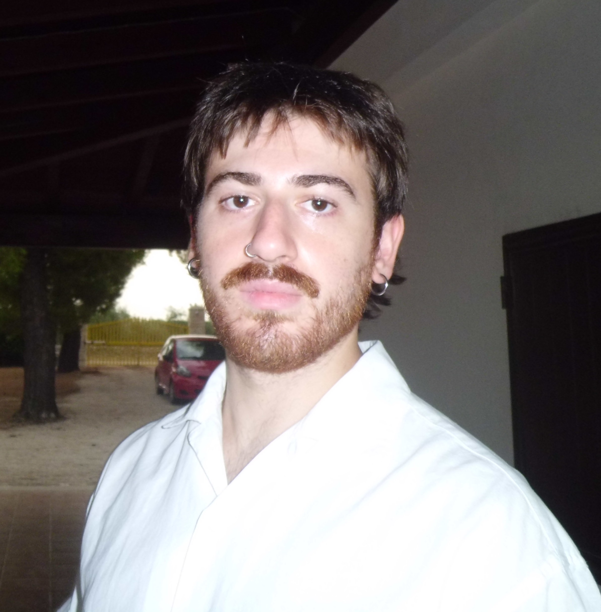
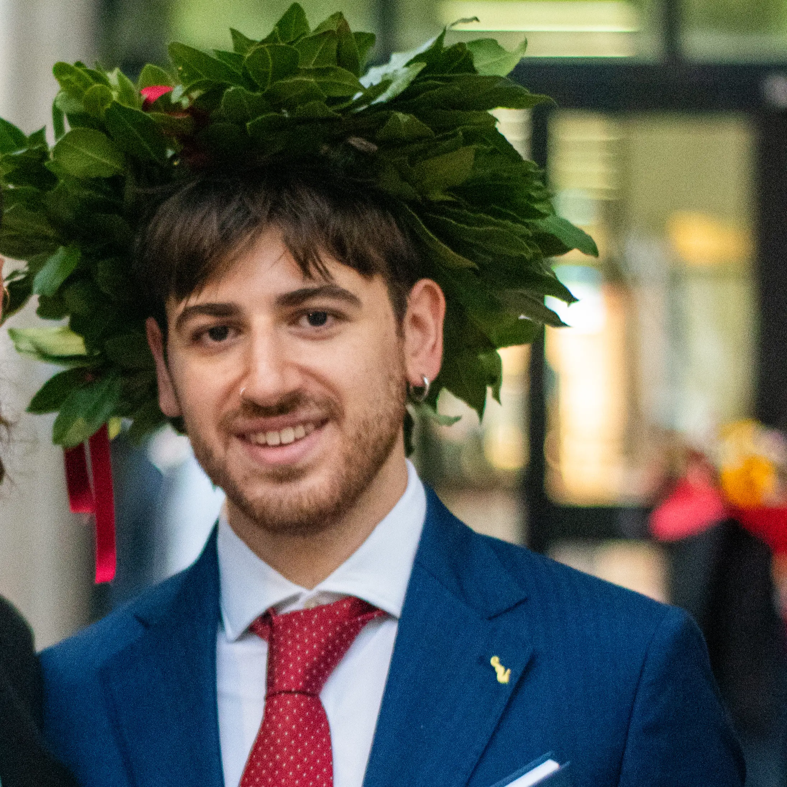
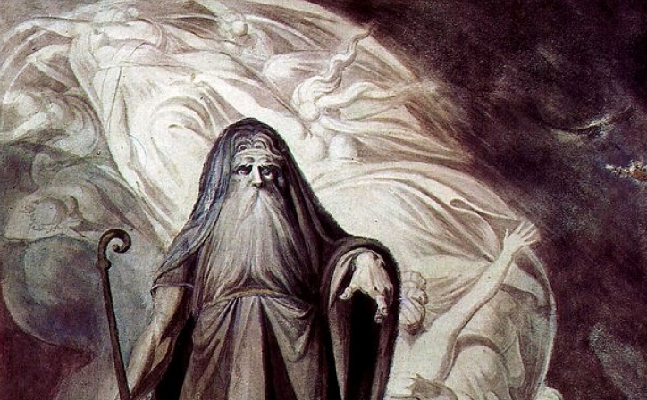
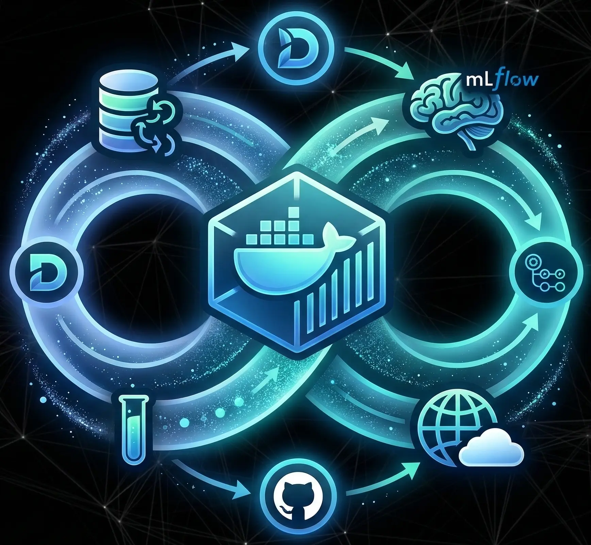
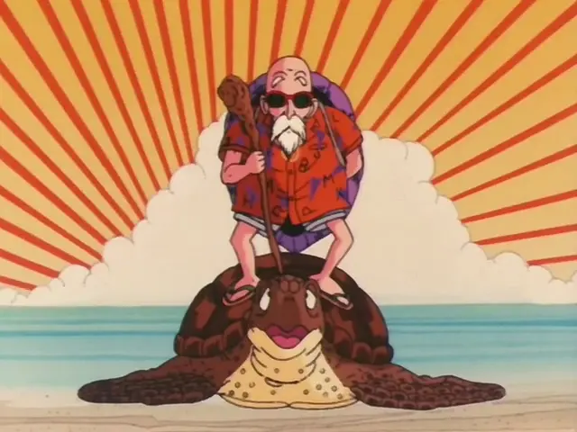

About me
My Journey
My path in computer science began as a personal wager on a field I had never directly explored, but which fascinated me from the very start for its ability to model the complexity of reality. This passion led me to a Bachelor’s degree in Computer Science at the University of Bari, where I completed an experimental thesis in Predictive Process Monitoring. The core of my work involved designing and implementing an encoding system to transform process instances into semantic stories, which were then fed into a BERT-based encoder to predict process outcomes. Following this first technical encounter with Artificial Intelligence, I chose to further my specialization by enrolling in the International Master’s Degree in Computer Science, Artificial Intelligence Curriculum at the University of Bari, a step that has defined my professional mission: to actively contribute to the evolution of this discipline.
Main interests
- Knowledge Graph Embeddings
- Time Series
- Process Discovery
- Agentic-AI
Technical Vision
Throughout my studies, I have developed a structured approach to designing AI-driven systems. I have matured the ability to identify real-world needs, formulate problems accurately, and design the most appropriate architectures. In practice, this translates into building end-to-end data processing and analysis pipelines, followed by rigorous experimentation on established benchmarks and a deep interpretation of the results. My goal is to develop reproducible systems that are compact and highly modular—ensuring easy maintenance and scalability—as well as resource-efficient and portable. In every phase of design and development, I apply a scientific rigor fueled by a highly critical eye and a strong attention to detail.
Professional Goals
Currently, my research and projects focus on Knowledge Graphs and Knowledge Graph Embedding models, areas in which I intend to further deepen my specialization. At the same time, I maintain a strong curiosity toward other branches of AI, viewing them as fertile ground for experimenting with novel combinations of methods to solve real-world problems elegantly and efficiently. I am aiming for the role of Research Engineer: a figure capable of navigating the intersection between implementing cutting-edge AI technologies and building real-world products. I am looking for a dynamic and stimulating environment where I can contribute to the design of systems that integrate state-of-the-art AI in innovation-driven contexts.What I am looking for
- Dynamic Environment
- Competitive Pay
- Cutting-edge AI Applications development
Projects
TIRESIAS
Developed a framework for the early prediction of mechanical resistance in additive manufacturing samples. By applying time-series clustering to experimental data, the system identifies representative medoids to establish critical failure thresholds for each stress test group. TIRESIAS leverages these insights to forecast the specific stress levels a sample can withstand before reaching the "point of no return," enabling non-destructive evaluation and subsequent sample reuse. A comparative study between LSTM and XGBoost architectures proved XGBoost to be the superior approach, delivering prediction accuracy with significantly greater earliness.
View project ↗
Deployable AI Component
Collaborated in a team to engineer a production-ready AI system focused on the full MLOps lifecycle. While using diabetes diagnosis as a trivial example of prediction task, we built an integrated pipeline featuring DVC for data versioning and MLflow for experiments tracking. We automated the entire workflow via GitHub Actions for CI/CD, deploying client and server containers to DockerHub and Hugging Face. The system is enriched by a Prometheus/Grafana monitoring stack and validated through Locust load testing to ensure stability under high traffic.
View project ↗
MUTEN: MUltiview Trace ENcodings
MUTEN Is a multi-view extension of DOROTHY , a research framework designed to mitigate "spaghetti model" complexity in non-Pareto event logs by applying clustering on encoded traces, extracting the process model only on the most representative instances. While the baseline uses Sentence-BERT to encode activity flow as semantic stories , I engineered an additional temporal view by applying Discrete Cosine Transform (DCT) to interpret time intervals as signals. My research demonstrated that temporal dynamics alone are highly informative—achieving performance comparable to the original baseline —while identifying critical challenges in multi-view feature fusion for imbalanced embedding dimensions.
View project ↗